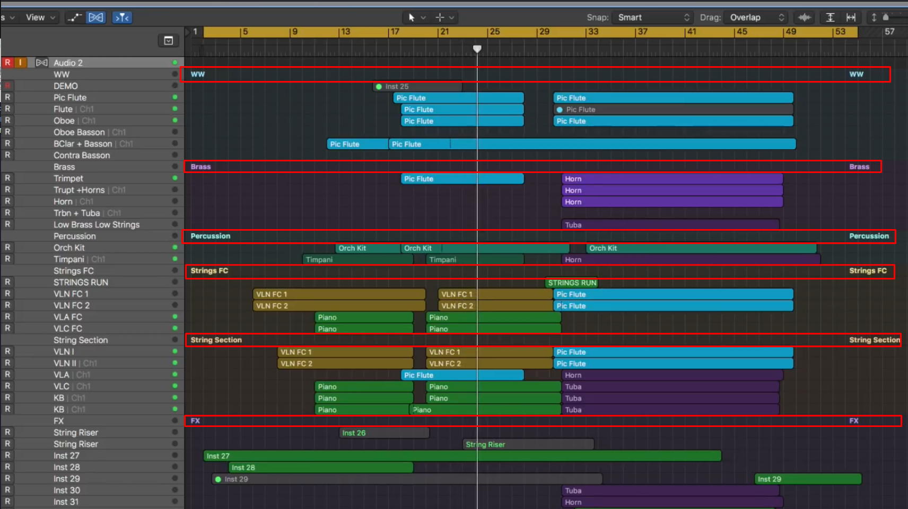

MC Various Scripts
This repository contains some scripts for Cockos Reaper D.A.W.
To use these scripts you can install them by using this URL in Reapack : https://raw.githubusercontent.com/MathieuCGit/MC_VariousScripts/master/index.xml
This script aims to reproduce the folder separation in a way Logic X does it.

This script aimes to provide a mechanism similar to the one in LogicProX to separate folders in the Arrange View.
Actually you have to customize your preferences directly into the script.
TRACK_HEIGHT
This MUST be AT LEAST 2 pixels higher than the size defined in Preferences > Apparence > Media > "Hide labels for items when item take lane height is less than".
You also have to uncheck "draw labels above items, rather than within items"
Default value is 28 but I got better result with 20pixels.
TRACK_COLOR_SINGLE
Do you want all the item folder to get the same color ? Otherwise, default folder track color will be used. Default is 0
TRACK_COLOR
Use RGB color code. Default is {111,121,131}
TRACK_COLOR_DARKER_STEP
This is the amount of darkness yo uwant to apply to default track color. 0 means NO darkness. Default is 25